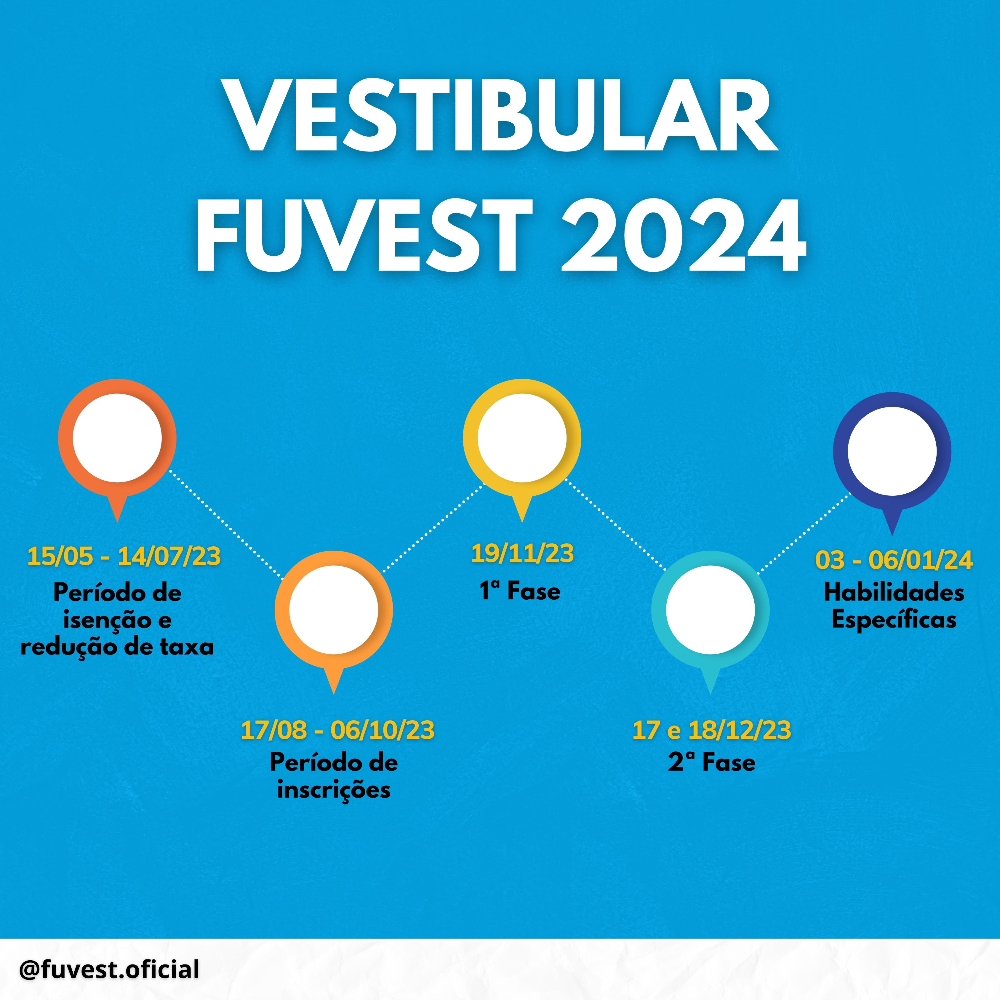

O calendário da aplicação das provas, foi divulgado, junto à abertura das inscrições para a aplicação dos vestibulares, dos cursões nos Campus de São Paulo e Piracicaba. A aplicação dos vestibulares para os Campus da UNESP com a faculdade técnica, ainda não foram divulgados.
Todo o ano, por volta do segundo trimestre do ano, o fundo de concursos das universidades de São Paulo, anunciam o calrndário com os planos de aplicação dos vestibulares para o ingresso nas faculdades no ano seguinte. Mas nesse ano, a FUVEST adiantou as divulgações, da mesma maneira que adiantou a aplicação da primeira e segunda fase, transferindo-as com a inicialização em Novembro (para a primeira fase) e, Dezembro (para a segunda fase).
Portanto, a FUVEST divulgou nessa segunda-feira (27/02), o calendario dos vetsibulares para o concurso das faculdades. O calendario como principais novidade, a antecipação da aplicação para a segunda fase, que teve como consequência, a antecipação da conclusão das correções e divulgação dos resultados. Dessa forma, para que isso seja possivel, foi preciso fazer a ampliação da bancada de avaliadores, onde também houve mudanças nas estratégias de correção das provas.
Além das alterações das datas para aplicações, outra novidade foi a apliação do periodo para o requerimento da isenção das taxas de aplicação, que ocorre do dia 15/05 ao dia 14/07. Sendo possivel pedir uma reanalise do pedido após a divulgação, que será divulgado no dia 03/06, assim, a correção dos documentos para concluir a aceitação na analise, ou requerimento para reanalise, ocorrerá no prazo do dia 04/08 ao 11/08. Sendo que a reanálise dos pedidos será divulgado particularmente ao requeridor. No demais, não houverão outras alterações relevantes ao publico, para acessar todas as informações e o calendario completo, acesse o site da FUVEST no link abaixo: